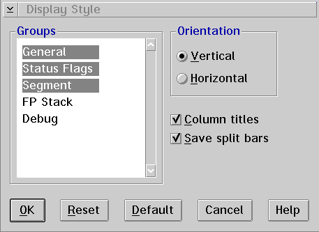

When you select the Display style... choice, the Display Style window is displayed, which allows you to select the type of information you want displayed in the Registers window.

Groups Group Heading
This specifies the five types of registers that the debugger displays. General registers are as follows:
Status Flags registers include the PC and the EFLAGS registers. Segment registers are as follows:
The PC register is the linear address of the current instruction. The FP stack registers are those defined by the math coprocessor. The Debug registers include miscellaneous processor registers such as CR0 and DR0.
Orientation Heading
The registers groups are separated with either vertical or horizontal split bars. Select the radio button which represents how you want the groups separated.
Enable the Column titles check box if you want the registers group to have a title. For example, General.
Enable the Save split bars check box if you want to save the adjustment of the split bars for the next time you open the Registers window.